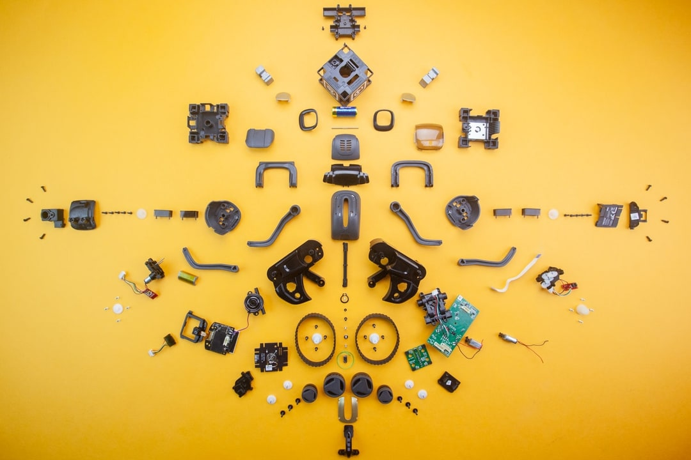
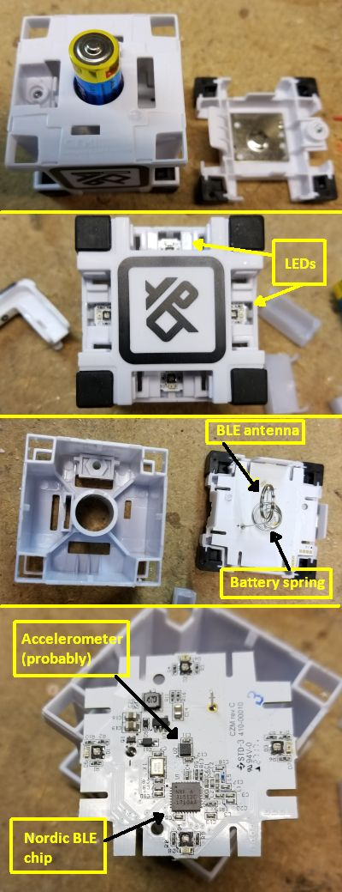
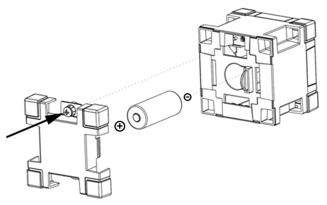
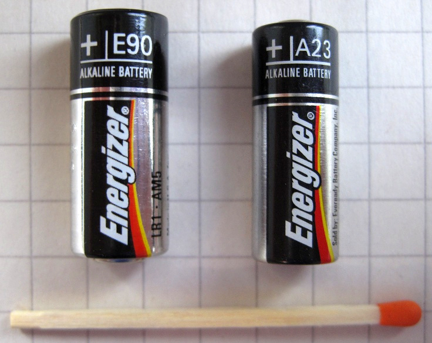
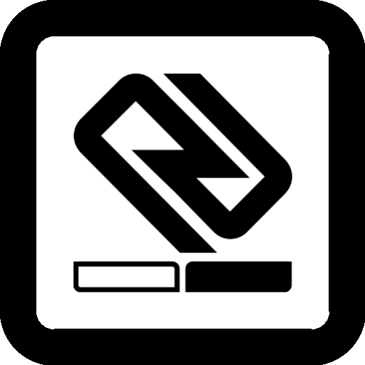
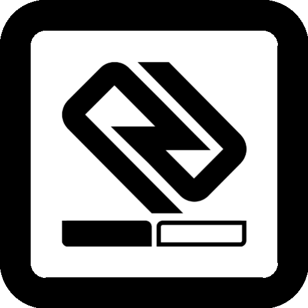
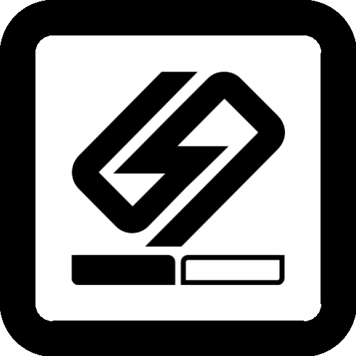
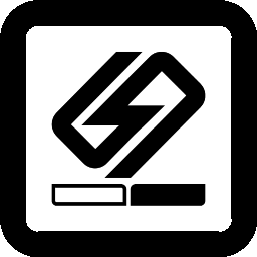

Build a Vector Light Cube
A start-to-finish guide for rebuilding or cloning Anki Vector’s interactive cube —
from Dialog DA14580 hardware through BLE protocol, vision markers, shell, and robot verification.
Reverse-engineered from robot/cube_firmware/ in this tree (Vector 1.6 rebuild).

1. Overview
Official Vector ships with one light cube (Cozmo shipped three). The cube is:
- Visual: six unique face markers (~23 mm) on a 44 mm cube so the camera can localize and dock.
- Wireless: BLE peripheral advertising as
Vector Cube, streaming accelerometer and battery, receiving light keyframes. - Battery powered: single alkaline N-cell (E90 / LR1), ~20–40 hours of active use.
resources/assets/cubeFirmware/cube.dfu is only the signed application blob (~3.2 KB).
Real source, board pinout, Dialog SDK, and tools are under robot/cube_firmware/.
Engine loads the DFU path via CubeCommsComponent and flashes when versions mismatch.

2. Two realistic build paths
Path A — Hardware-compatible
Run stock (or rebuilt) Anki images
- DA14580 (or carefully qualified 58x) + same pinout
- BMA253 3-wire SPI
- 12 LED channels + boost enable
- 1.5 V cell + Dialog power topology
- Anki loader + XXTEA DFU +
cube.dfu
Best fidelity Hardest PCB / sourcing.
Path B — Protocol clone
Any modern BLE MCU
- nRF52 / DA14531 / ESP32-C3 / …
- Implement GATT UUIDs +
protocol.h - Optional: skip stock DFU; ship your app only
- Still need 4 RGB corners + accel stream
- Still need correct vision markers + size
Most practical DIY Engine may still try OTA — handle or ignore.
3. What Vector actually needs from a cube
| Layer | Requirement | If missing… |
|---|---|---|
| Vision | 44 mm body, 6 face markers (LIGHTCUBE family), ~23 mm marker size | Cannot find / dock / roll reliably (dead battery still “visible”) |
| BLE discovery | Advertise name + custom service UUID; connectable peripheral | No lights, no tap games, no preferred-cube radio link |
| App protocol | Light keyframes, light index map, accel frames, voltage | Connects but behaviors misbehave |
| Accel orientation | Sensible axes relative to faces (tap / upright checks) | Pounce / tilt logic wrong |
| LED geometry | 4 corners RGB mapped like production | Animations on wrong corners |
| Power | Stable BLE + boost for LEDs; voltage reports | Drops / red-flash low-batt UX |
4. Bill of materials
Path A (stock-compatible) — electronic
| Qty | Part | Notes |
|---|---|---|
| 1 | Dialog / Renesas DA14580 | ARM Cortex-M0 + BLE. Packages in OTP docs: WLCSP34, QFN40, QFN48… Cube PCB likely WLCSP/QFN40 [INFERRED package] |
| 1 | 16 MHz crystal + load caps | Required. P1.2 / P1.3 reserved — do not route LEDs there |
| 1 | Bosch BMA253 (or drop-in with chip ID 0xFA) | 3-wire SPI; powered via GPIO |
| 4 | RGB LED packages (or 12 discrete) | One per corner; software PWM @ 200 Hz |
| 1 | LED boost regulator + enable | BOOST_EN on P2.0, 1V-BAT logic domain |
| 1 | 2.4 GHz antenna (printed / chip) | Follow Dialog RF design notes |
| * | Decoupling, RF matching, DCDC passives | Per DA14580 datasheet reference design |
| 1 | Battery holder for N / E90 / LR1 | Spring + positive contact; polarity: + toward door |
| opt | UART pads (P0.4 TX / P0.5 RX) | Factory “cubeboot” / programming |
| opt | External SPI flash | Not required for ~3 KB RAM-loaded app model |
Path B (clone) — electronic alternatives
| Block | Example | Notes |
|---|---|---|
| MCU+BLE | nRF52832/40, DA14531, ESP32-C3 | Must run BLE peripheral + your GATT server |
| Accel | BMA253, LIS2DH12, BMI160… | Report int16 XYZ; scale near 0x2000 ≈ 1 g (see bletool) |
| LEDs | WS2812 or 12× GPIO PWM | WS2812 is easier but changes power design |
| Power | 1.5 V boost-to-3.3 V or LiPo+regulator | If you change chemistry, redesign UVLO carefully |
Mechanical / optical (both paths)
| Item | Spec |
|---|---|
| Outer size | 44 × 44 × 44 mm (engine/BlockDefinitions.h) |
| Marker size | 23 mm default block marker size |
| Face set | LIGHTCUBE1–4 marker families (Vector typically one cube type) |
| Shell | Rigid cube, soft/rubber corners (stock), translucent LED windows on 4 vertical corners |
| Battery door | Phillips screw; cover one face |
| Weight / balance | Keep CG near center for roll/pickup consistency [INFERRED] |
5. SoC & radio
| Property | Value | Evidence |
|---|---|---|
| Device | Dialog Semiconductor DA14580 (now Renesas SmartBond) | datasheet.h = DA14580.h; configs da1458x_* |
| CPU | ARM Cortex-M0, 16 MHz system clock | Makefile -mcpu=cortex-m0; SYSTEM_CLOCK = 16e6 |
| Mode | Integrated processor (CFG_APP) | Host app is TASK_APP on-chip |
| Sleep | Extended sleep on | ARCH_EXT_SLEEP_ON, CFG_MEM_MAP_EXT_SLEEP |
| Connections | 1 concurrent | CFG_MAX_CONNECTIONS (1) |
| BD address | Public (OTP header) | GAPM_PUBLIC_ADDR; OTP BDADDR offset 0xD4 |
| Adv name | Vector Cube | user_config.h |
| DIS manufacturer | Anki / model Production | user_profiles_config.h |
6. Sensors
Bosch BMA253
- Chip ID register
0x00must read0xFAor cube emitsCOMMAND_ACCEL_FAILURE. - 3-wire SPI bit-banged on Port 0 (
ACC_nCS,ACC_SCK,ACC_SDA). ACC_PWR(P0.2) power-gates the sensor.- Configured: ±4 g, ~250 Hz BW, FIFO XYZ; streams 3 frames/message.
// robot/cube_firmware/app/accel.c (excerpt)
spi_write8(BGW_SPI3_WDT, 0x01); // three-wire SPI
spi_write8(PMU_RANGE, 0x05); // +4g
spi_write8(PMU_BW, 0x0D); // 250Hz BW
spi_write8(FIFO_CONFIG_1, 0x40); // FIFO XYZ
// chip_id must be 0xFAbletool treats 0x2000 raw counts ≈ 1 g when interpreting upright tests.
Battery ADC
On-chip GP-ADC samples VBAT1V about once per second and notifies COMMAND_VOLTAGE_DATA.
Host scale used in bletool: adc * 3.6 / 1024 volts (empirical for that tool).
7. Lights & boost
- 4 corners × RGB = 12 GPIOs (
D0…D11). - Software PWM via Timer0 at 200 Hz (
lights.c). BOOST_EN(P2.0) enables boost for LED power; driven as 1V-BAT domain GPIO.- Engine maps
NUM_CUBE_LEDS = 4logical lights.
// LED enum — corner order (lights.h)
HAL_LED_D1_RED/GRN/BLU // channel 0
HAL_LED_D2_RED/GRN/BLU // channel 1
HAL_LED_D3_RED/GRN/BLU // channel 2
HAL_LED_D4_RED/GRN/BLU // channel 38. Power & battery


| Spec | Value |
|---|---|
| Chemistry / size | Alkaline N / E90 / LR1 / MN9100 — 1.5 V |
| Dimensions | ≈ 12.0 mm Ø × 30.2 mm length |
| Runtime | ~20–40 h gameplay (official) |
| Forbidden | A23 (12 V); rechargeables (official warning) |
| FW rails | GPIO_POWER_RAIL_1V (boost enable) + _3V (LEDs, SPI, UART) |
| Self-test | Reset cube (unscrew 10 s, reassemble) → flash red→green→blue if OK |
9. Pin map (Anki board)
From robot/cube_firmware/app/board.h + drivers. Treat as the canonical Path A netlist.
| Net | Port.Pin | Direction / rail | Function |
|---|---|---|---|
| ACC_nCS | P0.0 | Out 3V | BMA253 chip select |
| — | P0.1 | — | (unused in map) |
| ACC_PWR | P0.2 | Out 3V | Accel power gate |
| ACC_SCK | P0.3 | Out 3V | SPI clock |
| UTX | P0.4 | UART 3V | Debug / cubeboot TX |
| URX | P0.5 | UART 3V | Debug RX |
| ACC_SDA | P0.6 | I/O 3V | 3-wire SPI data |
| D1 | P0.7 | Out 3V | LED |
| D7 | P1.0 | Out 3V | LED |
| D10 | P1.1 | Out 3V | LED |
| XTAL | P1.2 / P1.3 | — | DO NOT USE — corrupts 16 MHz |
| BOOST_EN | P2.0 | Out 1V | LED boost enable |
| D0 | P2.1 | Out 3V | LED |
| D2 | P2.2 | Out 3V | LED |
| D11 | P2.3 | Out 3V | LED |
| D9 | P2.4 | Out 3V | LED |
| D6 | P2.5 | Out 3V | LED |
| D8 | P2.6 | Out 3V | LED |
| D3 | P2.7 | Out 3V | LED |
| D4 | P2.8 | Out 3V | LED |
| D5 | P2.9 | Out 3V | LED |
10. Schematic sketch (logical)
[N-cell +]----+---- VBAT ----> DA14580 VBAT / DCDC (per Dialog ref)
|
+---- BOOST_IN --> boost converter --> LED anode rail (~>3V)
[N-cell -]---- GND
DA14580 P2.0 (BOOST_EN, 1V-BAT IO) --> boost ENABLE
DA14580 D0..D11 --> LED cathode or anode drivers (active as in lights.c)
DA14580 P0.2 ACC_PWR --> BMA253 VDD
DA14580 P0.0/3/6 --> BMA253 nCS / SCK / SDI/SDO (3-wire)
DA14580 RFIO --> matching --> antenna
DA14580 P0.4/P0.5 --> UART test points
DA14580 P1.2/P1.3 --> 16 MHz XTAL onlyThere is no full manufacturer schematic in-tree. Path A builders should start from the DA14580 reference design power/RF section and graft Anki’s GPIO map.
11. Mechanical shell & vision markers
Engine defines light cubes as 44×44×44 mm with 23 mm markers
(engine/BlockDefinitions.h). Vector recognizes families LIGHTCUBE1–4 (I/J/K/circle marker sets).
Marker textures for simulation (print templates) live in this repo:
simulator/protos/textures/lightCubes/



- Four vertical edges: translucent windows over RGB LEDs (diffusers).
- Rubberized corners improve grip / drop survival (stock manufacturing detail).
- Center mass PCB with battery along one axis; antenna often opposite or beside spring (teardown).
12. Firmware architecture
Two layers share one DA14580:
- Resident host / loader (
src/user_app/+ Dialog SDK) — BLE stack, custom GATT, XXTEA DFU into SysRAM, tick scheduler. - Application image (
app/→cube.dfu) — lights, accel, animation, voltage, protocol handlers.
| Item | Detail |
|---|---|
| App load address | 0x20005800 SysRAM (user_custs1_impl.c, linker.ls) |
| App map | ApplicationMap: version[16], init/deinit/tick, BLE_Recv/Send, nonce[16], app_data… |
| Encryption | XXTEA; key in tools/key.h; fixed nonce in loader |
| DFU format | 16-byte ASCII timestamp + encrypted body + trailing 0xFF (sign.py) |
| Stock image date | 2018-08-14T17:40… inside shipping cube.dfu |
| SPOTA | Disabled (EXCLUDE_DLG_SPOTAR) — Anki custom OTA only |
// application_api.h
typedef struct {
uint8_t version[0x10];
void (*AppInit)();
void (*AppDeInit)();
void (*AppTick)();
void (*BLE_Recv)(uint8_t, const void*);
void (*BLE_Send)(uint8_t, const void*);
uint8_t nonce[16];
uint8_t app_data[0x27CC];
} ApplicationMap;13. BLE services & UUIDs
Advertise Device Information Service + custom 128-bit service. Name: Vector Cube. Adv interval ~1 s.
| Role | UUID (string form as in bletool) | Props |
|---|---|---|
| Service | c6f6c70f-d219-598b-fb4c-308e1f22f830 | primary |
| OTA Write Point | 9590ba9c-5140-92b5-1844-5f9d681557a4 | write |
| Loaded Program Version | 450aa175-8d85-16a6-9148-d50e2eb7b79e | read + notify |
| Application Write | 0ea75290-6759-a58d-7948-598c4e02d94a | write (commands in) |
| Application Read | 43ef14af-5fb1-7b81-3647-2a9477824cab | read + notify (accel/volt out) |
Byte arrays in user_custs_config.h are little-endian UUID storage (Dialog style).
14. Application protocol (protocol.h)
| Cmd | Name | Direction | Payload |
|---|---|---|---|
| 0 | LIGHT_INDEX | Host → Cube | flags + 4 initial keyframe indices (channels) |
| 1 | LIGHT_KEYFRAMES | Host → Cube | flags=start index; up to 3 keyframes (RGB, hold, decay, link) |
| 2 | ACCEL_DATA | Cube → Host | tap_count + 3×(x,y,z) int16 |
| 3 | ACCEL_FAILURE | Cube → Host | chip id byte |
| 4 | VOLTAGE_DATA | Cube → Host | uint16 rail_v1 ADC |
// KeyFrame (6 bytes)
colors[3], hold, decay, link
// Max 128 keyframes, 4 animation channels, 3 frames per BLE command
// MTU-ish writes: 20 bytes characteristic lengthAnimation state machine: STATIC / HOLD / DECAY with linked frames (animation.c).
15. DFU / OTA flow
- Central connects; reads/notifies Loaded Program Version (16-byte ASCII timestamp string).
- If version ≠ on-disk
cube.dfuheader, engine / bletool streams DFU body (skip first 0x10) in 20-byte writes to OTA Write Point. - Loader copies into SysRAM; final short packet triggers XXTEA decrypt + nonce check.
- On success: version notify updates;
AppInitruns; tick every ~10 ms timer unit. - Runtime commands use Application Write; telemetry via Application Read notify.
16. Building firmware (from this repo)
Per robot/cube_firmware/README.md:
# Application image (gcc)
cd robot
./vmake.sh cube
# → cube_firmware/build/cube.dfu
# Or in app/:
cd robot/cube_firmware/app
make # needs arm-none-eabi-gcc, python3, xxtea
# signs with tools/sign.py + tools/key.h
# Host/loader side historically used Keil projects:
# cube_firmware.uvprojx / cube_application.uvprojxFull Dialog SDK tree is vendored under robot/cube_firmware/sdk/. Production loader programming uses Dialog OTP / UART boot paths (firstboot.c prints cubeboot).
17. Flashing nearby cubes (bletool)
cd robot/cube_firmware/bletool
npm install
cd ..
node bletool ../../resources/assets/cubeFirmware/cube.dfu
# or: node bletool ./build/cube.dfuOn match, bletool runs a RGB keyframe test and upright-accel pass/fail lighting.
Robot auto-flash: engine/components/cubes/cubeCommsComponent.cpp sets path
assets/cubeFirmware/cube.dfu on the CubeBleClient.
18. Path A — Build order (stock silicon)
- Prototype on DA14580 dev kit — bring up BLE advertise as
Vector Cube, UART log, current draw in extended sleep. - Port Anki pin map — match
board.h; keep P1.2/P1.3 free; wire BMA253 3-wire + power gate. - LED + boost — 12 channels, soft-PWM friendly (no heavy capacitive loading that breaks timing).
- Power tree — 1.5 V cell → Dialog DCDC; boost for LEDs; verify VBAT ADC range.
- Program loader — burn OTP header / boot path per Dialog; public BD_ADDR unique per cube.
- OTA app — flash
cube.dfuvia bletool; confirm version string and RGB self-test. - RF validation — range with robot (~few meters), concurrent with Wi-Fi environment.
- Mechanical fit — 44 mm shell, markers, door, springs, antenna keep-out.
- On-robot — freeplay connect, set lights, roll/pop-a-wheelie, WebViz Cubes tab.
19. Path B — Protocol clone (practical DIY)
- Pick BLE SoC with good peripheral examples (nRF52 SoftDevice / Zephyr / ArduinoBLE, etc.).
- Implement GATT service + 4 characteristics (UUIDs above). Advertise name
Vector Cube. - On connect: notify a 16-byte version string equal to the first 16 bytes of the robot’s
cube.dfu(currently starts2018-08-14T17:40…). - Parse Application Write packets per
protocol.h; drive 4 RGB LEDs with hold/decay (can simplify). - Notify accel frames (cmd 2) and voltage (cmd 4) at similar rates to stock.
- Print / apply vision markers; rigid 44 mm body; corner light pipes.
- Validate with phone nRF Connect first, then Vector connection coordinator / WebViz.
20. Suggested assembly order
- PCB SMT: SoC, crystal, RF, accel, boost, passives.
- Hand-solder springs / battery contacts; verify polarity silk.
- Mount LEDs toward corner light pipes; black out internal light leaks.
- Program loader (Path A) or firmware (Path B); functional test on bench with N-cell.
- Install PCB in mid-frame; route antenna away from battery metal.
- Apply face markers (correct rotation — top vs bottom docking conventions).
- Install diffusers / outer shell; torque battery screw gently.
- Pull-tab simulation: insert battery last before packing.
21. Verification checklist
22. Troubleshooting
| Symptom | Likely cause | Fix |
|---|---|---|
| No lights ever | Dead cell, reverse polarity, boost EN, frozen FW | Replace N-cell; clean springs; remove batt 60 s; Path A reflash |
| Red flash loop | Low battery (official UX) | New alkaline N-cell |
| Robot ignores cube | Sleeping robot; cube in charger space; no BLE; wrong markers | Wake Vector; move cube; check scan; verify print quality |
| Connects then OTA loops | Version string / DFU decrypt fail (nonce/key) | Path A: correct sign.py key; Path B: spoof matching version |
| ACCEL_FAILURE | Wrong chip / SPI wiring / power gate | Probe chip ID 0xFA; check 3-wire mode |
| Wrong colors/corners | LED channel map vs shell orientation | Remap in lights or rotate assembly |
| RF short range | Antenna keep-out, ground pour, plastic metal paint | Follow Dialog RF layout; retune matching |
| Docks poorly | Size not 44 mm; glossy markers; marker rotation | Re-print matte; check BlockDefinitions faces |
23. Sources in this repository
| Path | Why it matters |
|---|---|
robot/cube_firmware/ | Full cube FW, SDK, bletool, sign tool |
robot/cube_firmware/app/board.h | Pin map |
robot/cube_firmware/app/protocol.h | Wire protocol |
robot/cube_firmware/app/{lights,accel,animation,adc}.c | Peripherals |
robot/cube_firmware/src/user_app/ | Loader, GATT, XXTEA OTA |
resources/assets/cubeFirmware/cube.dfu | Shipped app image |
engine/components/cubes/ | Robot-side connection & lights |
engine/BlockDefinitions.h | 44 mm size, markers |
simulator/protos/textures/lightCubes/ | Marker art |
cubeBleClient/ | Host BLE client / DFU from robot |
docs/architecture/cubeConnections.md | Connection coordinator semantics |
24. Credits, confidence, legal
- CONFIRMED from this tree: DA14580, BMA253 ID, pin map, protocol, DFU, BLE UUIDs, 44 mm markers, DFU tooling.
- INFERRED / external: exact IC package, boost IC P/N, antenna type, full schematic, Cozmo-vs-Vector PCB deltas (Cozmo teardown author said Nordic — may be mis-ID or different gen).
- Images: Fictiv (Vector hero), Microcontroller Tips (cube disassembly), Digital Dream Labs support (battery diagram), Wikimedia (N vs A23), in-repo simulator markers.
- Firmware includes Dialog Semiconductor SDK headers/copyright; Anki / Digital Dream Labs product IP applies to markers, industrial design, and BLE protocol.
- This guide is for interoperability, repair, and research. Respect local RF certification law (FCC/CE) before selling transmitters. Do not brick other people’s cubes with mass DFU.